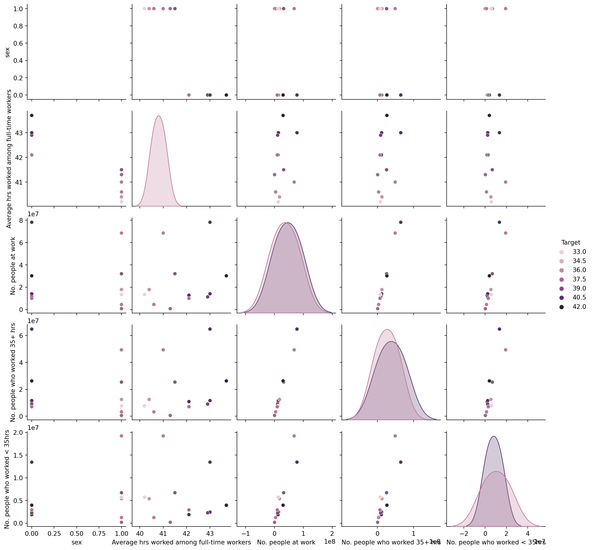
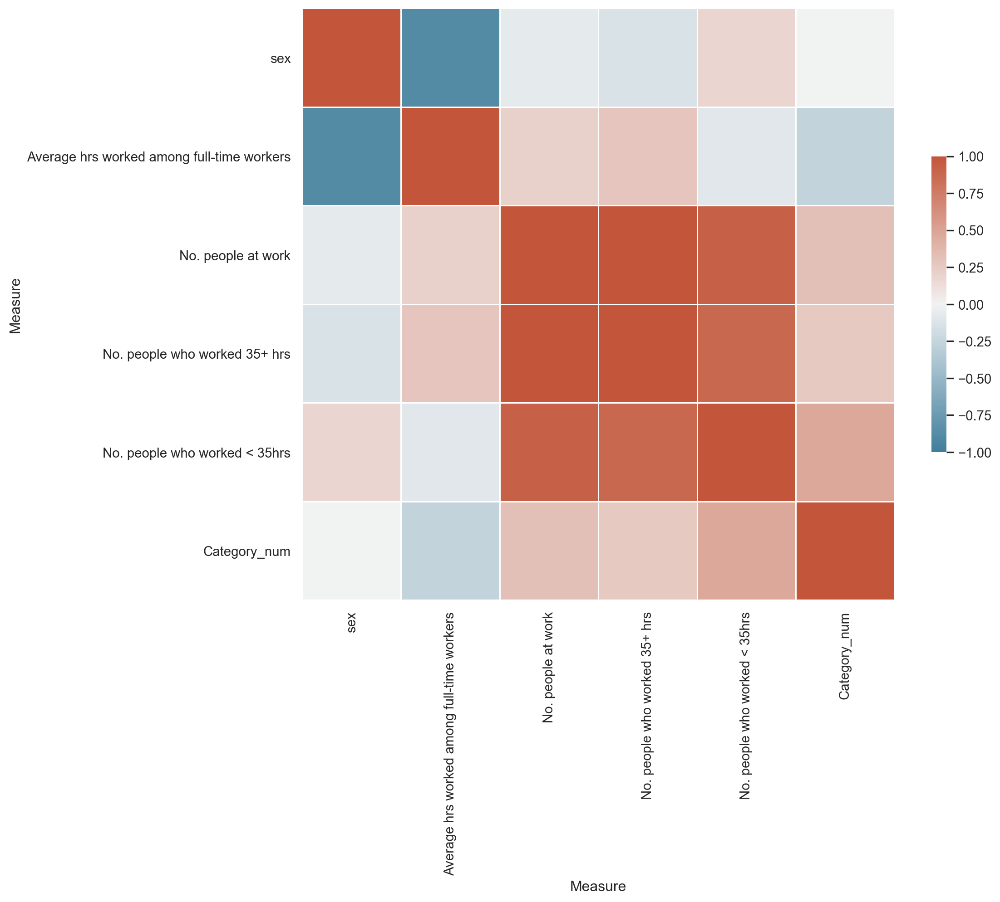
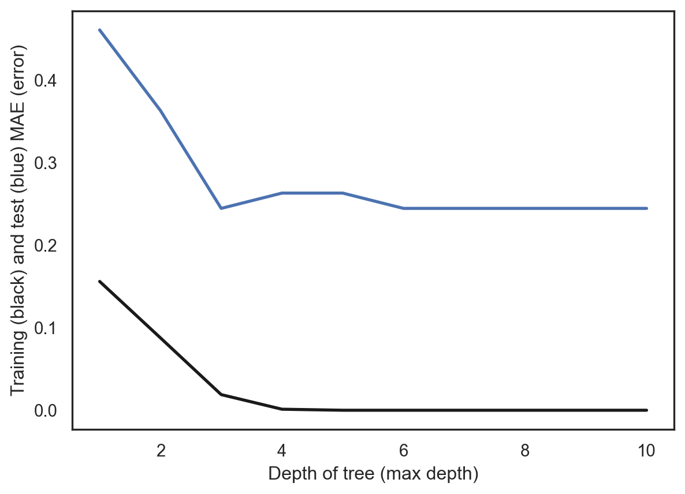
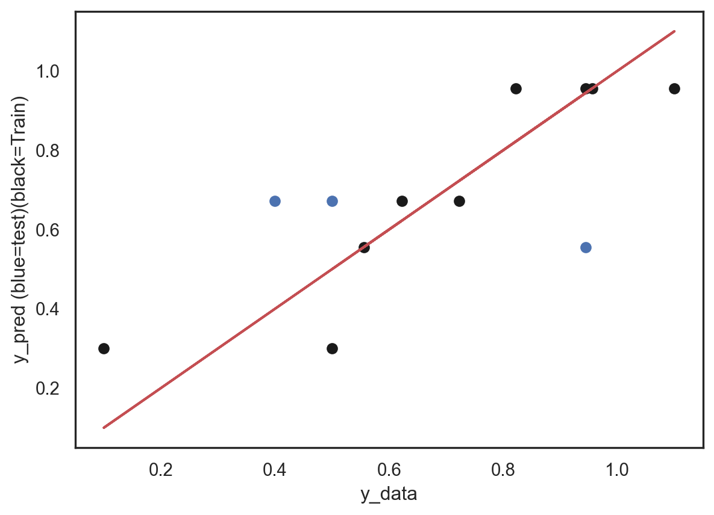
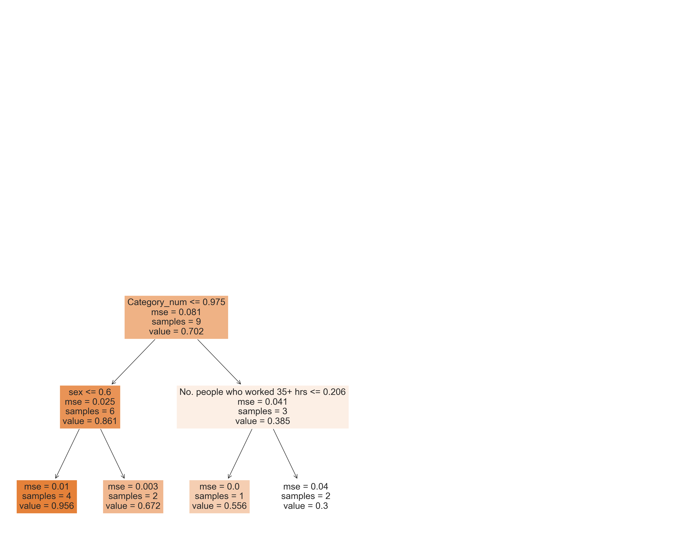
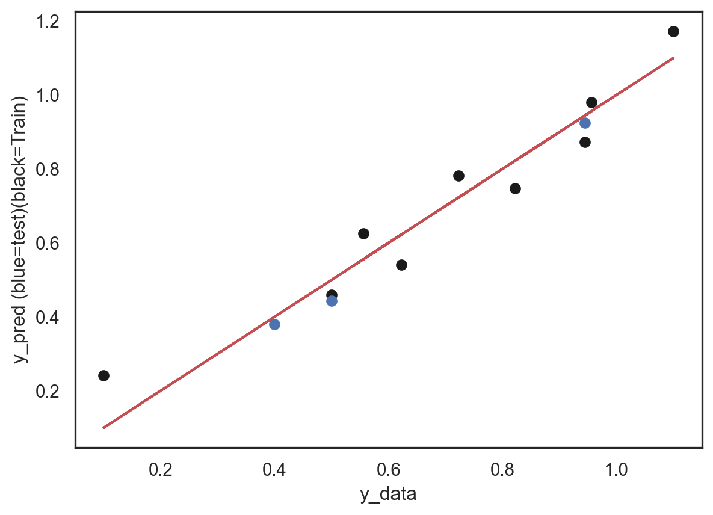

import sklearn
from sklearn import datasets
import numpy as np
import pandas as pd
import seaborn as sns
import matplotlib.pyplot as pltRegression with Decision Trees
Methods
For our analysis below, we will be using the Bureau of Labor Statistics’ hours worked by sex and occupation data set. We will attempt to classify the average number of hours worked by an employee based on employee sex, job type, and the number of employees who worked 35+ hours per week.
Imports
Load Data
df = pd.read_csv('../../../data/01-modified-data/hours_worked_(by_sex_and_by_occupation)_final.csv')
## drop unneeded rows
df = df[df['sex'] != 'B']
#df = df[df['Category'] != 'Total']# convert from long to wide
df = pd.pivot(df, index=['Category', 'sex'], columns=['Measure'], values='Value').reset_index()# create numerical representations for occupation categories
df['Category_num'] = 0
df.iloc[0:2, 7] = 1
df.iloc[2:4, 7] = 2
df.iloc[4:6, 7] = 3
df.iloc[6:8, 7] = 4
df.iloc[8:, 7] = 5# convert sex to numerical (0 = m, 1 = f)
df['sex'] = df['sex'].replace('F', 1).replace('M', 0)df.rename(columns={'Average hrs worked among all workers' : 'Target'}, inplace=True)Separate Predictor and Response Variables
X = df.iloc[:, [1,3,4,5,6,7]]
Y = df['Target']Normalization
Since our predictors (X) consist of hours worked by employees, total number of employees working in job types, and numerical representations for sex and job types, we first normalize our data to bring all the predictor values into a space that is unitless. This transformation of data brings everything to a similar scale, which makes it easier for the DT algorithm to “learn” the data.
X=0.1+(X-np.min(X,axis=0))/(np.max(X,axis=0)-np.min(X,axis=0))
Y=0.1+(Y-np.min(Y,axis=0))/(np.max(Y,axis=0)-np.min(Y,axis=0))Class Distribution
Numerical EDA
As shown in the output below, our target class is roughly balanced.
df['Target'].value_counts(ascending=True)37.1 1
42.0 1
33.0 1
40.7 1
35.7 1
39.5 1
38.6 1
37.7 1
36.6 2
40.6 2
Name: Target, dtype: int64Multivariable Pair Plot
sns.pairplot(df.iloc[:, 1:7], hue='Target')
plt.show()C:\Users\Eric\AppData\Roaming\Python\Python39\site-packages\seaborn\distributions.py:306: UserWarning:
Dataset has 0 variance; skipping density estimate.
C:\Users\Eric\AppData\Roaming\Python\Python39\site-packages\seaborn\distributions.py:306: UserWarning:
Dataset has 0 variance; skipping density estimate.
C:\Users\Eric\AppData\Roaming\Python\Python39\site-packages\seaborn\distributions.py:306: UserWarning:
Dataset has 0 variance; skipping density estimate.
C:\Users\Eric\AppData\Roaming\Python\Python39\site-packages\seaborn\distributions.py:306: UserWarning:
Dataset has 0 variance; skipping density estimate.
C:\Users\Eric\AppData\Roaming\Python\Python39\site-packages\seaborn\distributions.py:306: UserWarning:
Dataset has 0 variance; skipping density estimate.
C:\Users\Eric\AppData\Roaming\Python\Python39\site-packages\seaborn\distributions.py:306: UserWarning:
Dataset has 0 variance; skipping density estimate.
C:\Users\Eric\AppData\Roaming\Python\Python39\site-packages\seaborn\distributions.py:306: UserWarning:
Dataset has 0 variance; skipping density estimate.
C:\Users\Eric\AppData\Roaming\Python\Python39\site-packages\seaborn\distributions.py:306: UserWarning:
Dataset has 0 variance; skipping density estimate.
C:\Users\Eric\AppData\Roaming\Python\Python39\site-packages\seaborn\distributions.py:306: UserWarning:
Dataset has 0 variance; skipping density estimate.
C:\Users\Eric\AppData\Roaming\Python\Python39\site-packages\seaborn\distributions.py:306: UserWarning:
Dataset has 0 variance; skipping density estimate.
C:\Users\Eric\AppData\Roaming\Python\Python39\site-packages\seaborn\distributions.py:306: UserWarning:
Dataset has 0 variance; skipping density estimate.
C:\Users\Eric\AppData\Roaming\Python\Python39\site-packages\seaborn\distributions.py:306: UserWarning:
Dataset has 0 variance; skipping density estimate.
C:\Users\Eric\AppData\Roaming\Python\Python39\site-packages\seaborn\distributions.py:306: UserWarning:
Dataset has 0 variance; skipping density estimate.
C:\Users\Eric\AppData\Roaming\Python\Python39\site-packages\seaborn\distributions.py:306: UserWarning:
Dataset has 0 variance; skipping density estimate.
C:\Users\Eric\AppData\Roaming\Python\Python39\site-packages\seaborn\distributions.py:306: UserWarning:
Dataset has 0 variance; skipping density estimate.
C:\Users\Eric\AppData\Roaming\Python\Python39\site-packages\seaborn\distributions.py:306: UserWarning:
Dataset has 0 variance; skipping density estimate.
C:\Users\Eric\AppData\Roaming\Python\Python39\site-packages\seaborn\distributions.py:306: UserWarning:
Dataset has 0 variance; skipping density estimate.
C:\Users\Eric\AppData\Roaming\Python\Python39\site-packages\seaborn\distributions.py:306: UserWarning:
Dataset has 0 variance; skipping density estimate.
C:\Users\Eric\AppData\Roaming\Python\Python39\site-packages\seaborn\distributions.py:306: UserWarning:
Dataset has 0 variance; skipping density estimate.
C:\Users\Eric\AppData\Roaming\Python\Python39\site-packages\seaborn\distributions.py:306: UserWarning:
Dataset has 0 variance; skipping density estimate.
C:\Users\Eric\AppData\Roaming\Python\Python39\site-packages\seaborn\distributions.py:306: UserWarning:
Dataset has 0 variance; skipping density estimate.
C:\Users\Eric\AppData\Roaming\Python\Python39\site-packages\seaborn\distributions.py:306: UserWarning:
Dataset has 0 variance; skipping density estimate.
C:\Users\Eric\AppData\Roaming\Python\Python39\site-packages\seaborn\distributions.py:306: UserWarning:
Dataset has 0 variance; skipping density estimate.
C:\Users\Eric\AppData\Roaming\Python\Python39\site-packages\seaborn\distributions.py:306: UserWarning:
Dataset has 0 variance; skipping density estimate.
C:\Users\Eric\AppData\Roaming\Python\Python39\site-packages\seaborn\distributions.py:306: UserWarning:
Dataset has 0 variance; skipping density estimate.
C:\Users\Eric\AppData\Roaming\Python\Python39\site-packages\seaborn\distributions.py:306: UserWarning:
Dataset has 0 variance; skipping density estimate.
C:\Users\Eric\AppData\Roaming\Python\Python39\site-packages\seaborn\distributions.py:306: UserWarning:
Dataset has 0 variance; skipping density estimate.
C:\Users\Eric\AppData\Roaming\Python\Python39\site-packages\seaborn\distributions.py:306: UserWarning:
Dataset has 0 variance; skipping density estimate.
C:\Users\Eric\AppData\Roaming\Python\Python39\site-packages\seaborn\distributions.py:306: UserWarning:
Dataset has 0 variance; skipping density estimate.
C:\Users\Eric\AppData\Roaming\Python\Python39\site-packages\seaborn\distributions.py:306: UserWarning:
Dataset has 0 variance; skipping density estimate.
C:\Users\Eric\AppData\Roaming\Python\Python39\site-packages\seaborn\distributions.py:306: UserWarning:
Dataset has 0 variance; skipping density estimate.
C:\Users\Eric\AppData\Roaming\Python\Python39\site-packages\seaborn\distributions.py:306: UserWarning:
Dataset has 0 variance; skipping density estimate.
C:\Users\Eric\AppData\Roaming\Python\Python39\site-packages\seaborn\distributions.py:306: UserWarning:
Dataset has 0 variance; skipping density estimate.
C:\Users\Eric\AppData\Roaming\Python\Python39\site-packages\seaborn\distributions.py:306: UserWarning:
Dataset has 0 variance; skipping density estimate.
C:\Users\Eric\AppData\Roaming\Python\Python39\site-packages\seaborn\distributions.py:306: UserWarning:
Dataset has 0 variance; skipping density estimate.
C:\Users\Eric\AppData\Roaming\Python\Python39\site-packages\seaborn\distributions.py:306: UserWarning:
Dataset has 0 variance; skipping density estimate.
C:\Users\Eric\AppData\Roaming\Python\Python39\site-packages\seaborn\distributions.py:306: UserWarning:
Dataset has 0 variance; skipping density estimate.
C:\Users\Eric\AppData\Roaming\Python\Python39\site-packages\seaborn\distributions.py:306: UserWarning:
Dataset has 0 variance; skipping density estimate.
C:\Users\Eric\AppData\Roaming\Python\Python39\site-packages\seaborn\distributions.py:306: UserWarning:
Dataset has 0 variance; skipping density estimate.
C:\Users\Eric\AppData\Roaming\Python\Python39\site-packages\seaborn\distributions.py:306: UserWarning:
Dataset has 0 variance; skipping density estimate.
C:\Users\Eric\AppData\Roaming\Python\Python39\site-packages\seaborn\distributions.py:306: UserWarning:
Dataset has 0 variance; skipping density estimate.
C:\Users\Eric\AppData\Roaming\Python\Python39\site-packages\seaborn\distributions.py:306: UserWarning:
Dataset has 0 variance; skipping density estimate.
C:\Users\Eric\AppData\Roaming\Python\Python39\site-packages\seaborn\distributions.py:306: UserWarning:
Dataset has 0 variance; skipping density estimate.

Feature Selection
Correlation
The correlation output below shows a strong negative correlation (< -0.8) between sex and the average hours worked among full-time workers. Additionally, we can see a strong positive correlation among the number of people at work, the number of people who worked 35+ hours, and the number of people who worked < 35 hours. Since we need to maintain independence among the predictor variables, I will drop the average hours worked among full-time workers, the number of people at work, and the number of people who worked < 35 hours.
corr = X.corr()
print(corr) Measure sex \
Measure
sex 1.000000e+00
Average hrs worked among full-time workers -8.849447e-01
No. people at work -6.824094e-02
No. people who worked 35+ hrs -1.371153e-01
No. people who worked < 35hrs 1.806626e-01
Category_num -7.447602e-17
Measure Average hrs worked among full-time workers \
Measure
sex -0.884945
Average hrs worked among full-time workers 1.000000
No. people at work 0.208849
No. people who worked 35+ hrs 0.287486
No. people who worked < 35hrs -0.087910
Category_num -0.259927
Measure No. people at work \
Measure
sex -0.068241
Average hrs worked among full-time workers 0.208849
No. people at work 1.000000
No. people who worked 35+ hrs 0.994119
No. people who worked < 35hrs 0.924555
Category_num 0.316673
Measure No. people who worked 35+ hrs \
Measure
sex -0.137115
Average hrs worked among full-time workers 0.287486
No. people at work 0.994119
No. people who worked 35+ hrs 1.000000
No. people who worked < 35hrs 0.877853
Category_num 0.263533
Measure No. people who worked < 35hrs \
Measure
sex 0.180663
Average hrs worked among full-time workers -0.087910
No. people at work 0.924555
No. people who worked 35+ hrs 0.877853
No. people who worked < 35hrs 1.000000
Category_num 0.473204
Measure Category_num
Measure
sex -7.447602e-17
Average hrs worked among full-time workers -2.599267e-01
No. people at work 3.166733e-01
No. people who worked 35+ hrs 2.635328e-01
No. people who worked < 35hrs 4.732042e-01
Category_num 1.000000e+00 Correlation Matrix Heatmap
The correlation matrix heatmap below reflects the previous correlation output. Again, there is a strong negative correlation between sex and the average hours worked among full-time workers, and a strong positive correlation among the number of people at work, the number of people who worked 35+ hours, and the number of people who worked < 35 hours.
sns.set_theme(style="white")
f, ax = plt.subplots(figsize=(11, 9)) # Set up the matplotlib figure
cmap = sns.diverging_palette(230, 20, as_cmap=True) # Generate a custom diverging colormap
# Draw the heatmap with the mask and correct aspect ratio
sns.heatmap(corr, cmap=cmap, vmin=-1, vmax=1, center=0,
square=True, linewidths=.5, cbar_kws={"shrink": .5})
plt.show();
Split Data
# PARTITION THE DATASET INTO TRAINING AND TEST SETS
from sklearn.model_selection import train_test_split
test_ratio=0.2
x_train, x_test, y_train, y_test = train_test_split(X, Y, test_size=test_ratio, random_state=0)Model Tuning
A known issue with DTs is the proneness of the model to overfit training data. In order to find a more well-rounded model, we will perform model tuning.
Hyperparameter Tuning
First, we loop over possible hyperparameter values, ranging from 1 to 10, keeping track of the training and test sets’ mean absolute errors (MAE) for each hyperparameter value. Ideally, we want to find the hyperparameter that minimizes the MAE for both training and test sets while not having the respective MAE values diverge too severely from each other.
From the output below, we can clearly see that the model begins overfitting quickly, with the MAE difference between training and test set becoming greater than 10 fold by min_samples_split=3.
from sklearn.metrics import mean_absolute_percentage_error
from sklearn.metrics import mean_absolute_error
from sklearn.tree import DecisionTreeRegressor
# HYPER PARAMETER SEARCH FOR OPTIMAL NUMBER OF NEIGHBORS
hyper_param=[]
train_error=[]
test_error=[]
# LOOP OVER HYPER-PARAM
for i in range(1,11):
# INITIALIZE MODEL
model = DecisionTreeRegressor(max_depth=i)
# TRAIN MODEL
model.fit(x_train,y_train)
# OUTPUT PREDICTIONS FOR TRAINING AND TEST SET
yp_train = model.predict(x_train)
yp_test = model.predict(x_test)
# shift=1+np.min(y_train) #add shift to remove division by zero
err1=mean_absolute_error(y_train, yp_train)
err2=mean_absolute_error(y_test, yp_test)
# err1=100.0*np.mean(np.absolute((yp_train-y_train)/y_train))
# err2=100.0*np.mean(np.absolute((yp_test-y_test)/y_test))
hyper_param.append(i)
train_error.append(err1)
test_error.append(err2)
print("hyperparam =",i)
print(" train error:",err1)
print(" test error:" ,err2)
print(" error diff:" ,abs(err2-err1))hyperparam = 1
train error: 0.15596707818930045
test error: 0.46049382716049375
error diff: 0.3045267489711933
hyperparam = 2
train error: 0.08765432098765434
test error: 0.362962962962963
error diff: 0.27530864197530863
hyperparam = 3
train error: 0.0189300411522634
test error: 0.262962962962963
error diff: 0.2440329218106996
hyperparam = 4
train error: 0.0012345679012345883
test error: 0.2444444444444445
error diff: 0.2432098765432099
hyperparam = 5
train error: 0.0
test error: 0.2444444444444445
error diff: 0.2444444444444445
hyperparam = 6
train error: 0.0
test error: 0.262962962962963
error diff: 0.262962962962963
hyperparam = 7
train error: 0.0
test error: 0.262962962962963
error diff: 0.262962962962963
hyperparam = 8
train error: 0.0
test error: 0.262962962962963
error diff: 0.262962962962963
hyperparam = 9
train error: 0.0
test error: 0.2444444444444445
error diff: 0.2444444444444445
hyperparam = 10
train error: 0.0
test error: 0.262962962962963
error diff: 0.262962962962963Convergence Plot
Our numerical intuition from above can also be visualized with a convergence plot. Again, we can see quite rapid overfitting occurring, and there really doesn’t seem to be a “safe” choice of hyperparameter that avoids overfitting outright; however, our intution of min_samples_split=2 seems to be a moderate choice to avoid the dramatic overfitting that begins to occur from min_samples_split=3.
plt.plot(hyper_param,train_error ,linewidth=2, color='k')
plt.plot(hyper_param,test_error ,linewidth=2, color='b')
plt.xlabel("Depth of tree (max depth)")
plt.ylabel("Training (black) and test (blue) MAE (error)")
plt.show();
Final Results
Train Optimal Model
# INITIALIZE MODEL
model = DecisionTreeRegressor(max_depth=2)
model.fit(x_train,y_train) # TRAIN MODEL
# OUTPUT PREDICTIONS FOR TRAINING AND TEST SET
yp_train = model.predict(x_train)
yp_test = model.predict(x_test)
err1=mean_absolute_error(y_train, yp_train)
err2=mean_absolute_error(y_test, yp_test)
print(" train error:",err1)
print(" test error:" ,err2) train error: 0.08765432098765434
test error: 0.2777777777777778Parity Plot
plt.plot(y_train,yp_train ,"o", color='k')
plt.plot(y_test,yp_test ,"o", color='b')
plt.plot(y_train,y_train ,"-", color='r')
plt.xlabel("y_data")
plt.ylabel("y_pred (blue=test)(black=Train)")Text(0, 0.5, 'y_pred (blue=test)(black=Train)')
Plot Tree
from sklearn import tree
def plot_tree(model, X, Y):
fig = plt.figure(figsize=(25,40))
_ = tree.plot_tree(model,
feature_names=X.columns,
class_names=Y.name,
filled=True)
plot_tree(model,X,Y)
Linear Regression
# LINEAR REGRESSION
from sklearn.linear_model import LinearRegression
model = LinearRegression().fit(X, Y)
# OUTPUT PREDICTIONS FOR TRAINING AND TEST SET
yp_train = model.predict(x_train)
yp_test = model.predict(x_test)
plt.plot(y_train,yp_train ,"o", color='k')
plt.plot(y_test,yp_test ,"o", color='b')
plt.plot(y_train,y_train,"-", color='r')
plt.xlabel("y_data")
plt.ylabel("y_pred (blue=test)(black=Train)")
err1=100.0*np.mean(np.absolute((yp_train-y_train)/y_train))
err2=100.0*np.mean(np.absolute((yp_test-y_test)/y_test))
print(" train error:",err1)
print(" test error:" ,err2)
plt.show(); train error: 23.337452377286734
test error: 6.258292633955939
The parity plot for our model doesn’t fall closely to the desired y=x line, which suggests that the fit for this model definitely has room for improvement. Additionally, the linear regression shows a test error lower than training error, which suggests sampling bias.